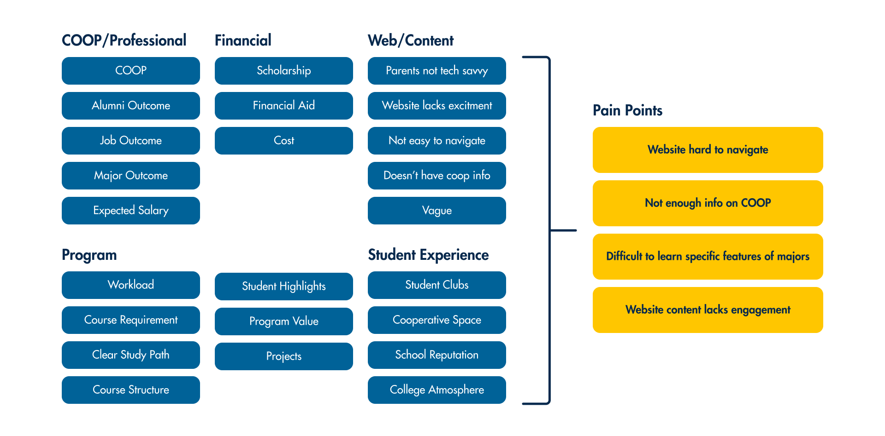
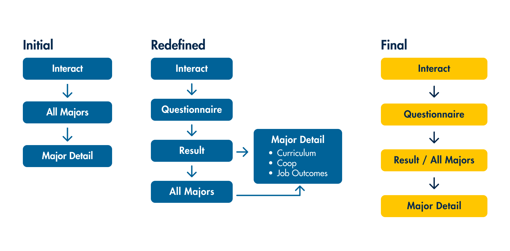

The goal of this project is to create an interactive touchscreen interface that would assist prospective and undecided Westphal students in selecting a program of study. Our team of 5 was given about 20 weeks to research, design, prototype, and develop this experience, with the aim of addressing the issue of the Westphal website's lack of an engaging and user-friendly approach to help students explore majors and find the best fit for them. By creating an engaging and visually appealing interface, our solution aimed to provide students with an approachable tool that would help them make informed decisions about their academic future.
Our users are prospective and undecided Westphal students who need a tool to help them decide what to study at Westphal college, because the current website doesn’t cater to uncertain students and is not engaging.
Our goal was to create an interactive touchscreen interface that would assist students in selecting a program of study. Since it would mainly live on a touchscreen in the lobby, we wanted this experience to be bite-sized so that the user will only need to spend a short amount of time in front of the display. By doing so, we wanted this interface to serve as a vehicle for students to begin research, something that would spark their interests in the majors offered at Westphal.
To begin the project, we aimed to gain a comprehensive understanding of our potential users. Our process started with an in-depth exploration of our target audience. We conducted multiple user interviews and then synthesized the data using the affinity mapping technique. By doing so, we were able to identify the core problems, pain points, and goals that students and their families face when exploring majors at Westphal.
We then reviewed our findings alongside some of our initial assumptions. Using this information, we developed a User Persona to better understand the needs and preferences of our target audience.

Having gained a comprehensive understanding of our users, we began the deation process by brainstorming a range of possible solutions. During our initial designing phase, we wanted to build upon the current website, bringing some interactivity and reorganizing the content to make them consistent across majors so the student can have an easier time comparing them. After some usability testing, we quickly found out that this information, as informatics as they are, failed to help our users narrow down their selection.
"The last time I was on the website, I felt overwhelmed by the amount of information, and the benefits of each major were not adequately emphasized or differentiated."
In order to make the project more engaging, we added a questionnaire that targets the user’s interests, personality, and work preferences. By doing so, we can compare the user selections and the tags associated with each major to help them narrow down their selection. After this, we continued to refine our user flow by making it more streamlined and easier to navigate.
We began by sketching out our ideas for the low-fidelity prototype. We wanted to incorporate components that highlighted the major’s very specific details, such as unique aspects of the different curriculums. Our flow followed the users sharing details about themselves through a 3 question, multiple choice “personality quiz”.